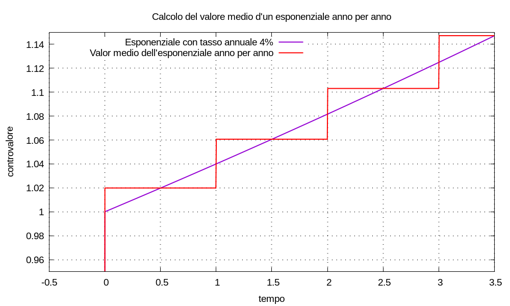
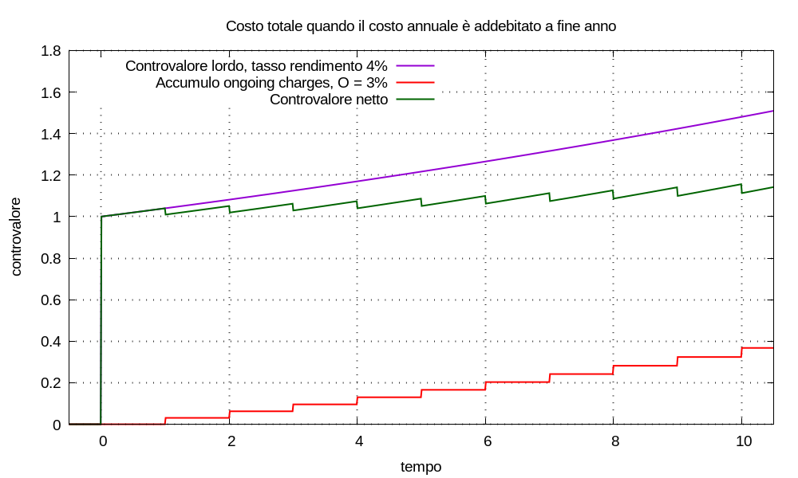
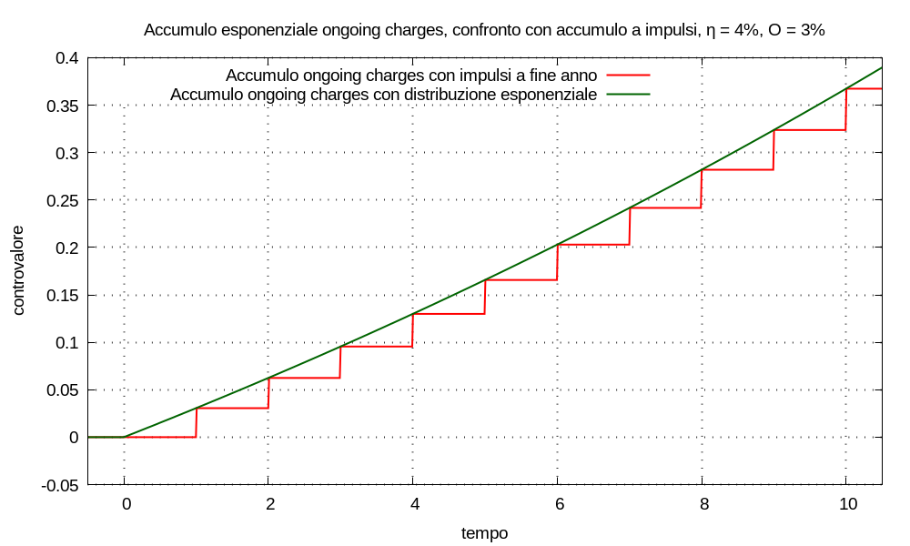
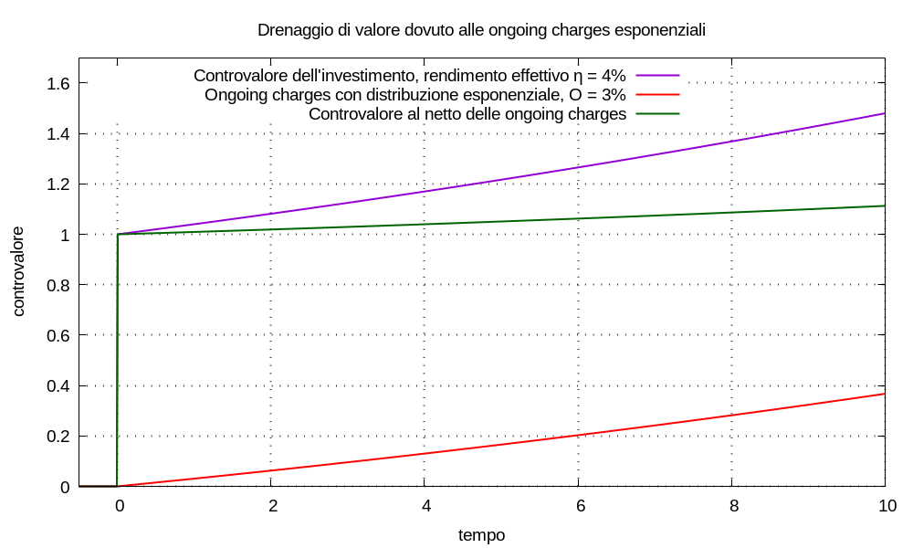

Nell’economia reale: il possesso e la gestione d’un portafoglio finanziario costano denaro all’investitore. A volte sono noti i singoli addebiti di costi e commissioni: in questi casi si possono aggiungere tali pagamenti alla movimentazione in ingresso al multimetro; altre volte è disponibile una stima dei costi d’esercizio in termini d’una percentuale all’anno, senza che si sappia come tali prelievi sono distribuiti.
Simuliamo un investimento con un multimetro di remunerazione λ = log1p(η); la movimentazione sia:
M(t) = C0 δ(t - t0)
e il controvalore:
U(t) = C0 u(t - t0) esp[λ (t - t0)]
Supponiamo che il meglio che possiamo fare sia ottenere una stima dei costi annuali come percentuale O del valor medio del controvalore nell’anno.
Usiamo la lettera O dalla denominazione ongoing charges figure come definita da “CESR guidelines on the methodology for calculation of the ongoing charges figure in the Key Investor Information Document”; al punto ‘10’ di pagina 6:
The ongoing charges figure shall be the ratio of the total discloseable costs to the average net assets of the UCITS, calculated according to this section. The figure shall be expressed as a percentage to two decimal places.
non posso resistere dal far notare la lettera ‘d’ del punto ‘17’ a pagina 6:
if, in the management company’s opinion, expressing a figure to two decimal places would be likely to suggest a spurious degree of accuracy to investors, it shall be sufficient to express that figure to one decimal place
vorrei leggere il verbale della riunione del Committee of European Securities Regulators in cui questo paragrafo è stato discusso e approvato: se 3,45% lo fai diventare 3,4% di quanti soldi si tratta? Capisco la logica, però gli spiccioli di qualcun altro sono piú di tutto il mio patrimonio. Non ho visto la specifica delle regole d’approssimazione… significa che 0,199999% può diventare 0,1%?
Riguardo il valor medio del controvalore anno per anno:
U(t) = C0 = U(0)
il valor medio è Umedio anno = C0;
Umedio anno = ∫t0→t1 U(t) dt ÷ (t1 - t0) =
= C0 { esp[λ (t1 - t0)] - esp[λ (t0 - t0)] } ÷ [λ (t1 - t0)] =
= C0 [esp(λ) - 1] ÷ λ =
= C0 espm1(λ) ÷ λ = C0 η ÷ λ
generalizzando a qualsiasi anno: il valor medio in ogni anno risulta essere il controvalore all’inizio dell’anno moltiplicato per η ÷ λ;
In definitiva: indicizzati gl’anni con k = tk - t0 = 0, 1, ... il valor medio del controvalore risulta:
Umedio,k = U(k) η ÷ λ
usando i gradini di Heaviside per definire delle finestre annuali: possiamo definire una funzione valor medio anno dopo anno come:
Umedio(t) = U(k) η ÷ λ [ u(t - k) - u(t - (k + 1)) ]
Esempi Per una varietà di valori del tasso annuale, risulta:
η = 2% ⇒ λ = log1p(η) ≈ 0,0198026 ⇒ η ÷ λ ≈ 1,00997η = 3% ⇒ λ = log1p(η) ≈ 0,0295588 ⇒ η ÷ λ ≈ 1,01493η = 4% ⇒ λ = log1p(η) ≈ 0,0392207 ⇒ η ÷ λ ≈ 1,01987

Osservazione Possiamo considerare il valor medio come funzione di due variabili: il valore dell’esponenziale all’inizio dell’anno; il valore del tasso annuale. Fissato un valore per una delle due variabili: esistono infiniti possibili valori dell’altra.
Osservazione Potremmo voler procedere inversamente, per esempio: dati il valor medio Umedio,k e il valore all’inizio dell’anno U(k), determinare il corrispondente tasso annuale. Basterebbe risolvere numericamente l’equazione:
Umedio,k - U(k) η ÷ log1p(η) = 0cioè trovare il valore η che rappresenta lo zero dell’espressione al primo membro.
Noto il valor medio anno per anno e noto il coefficiente O: il costo anno per anno risulta:
Ucosto,k = O Umedio,k = (O η ÷ λ) U(k)
per comodità definiamo il simbolo ω = O η ÷ λ.
Accumulo a impulsi Supponiamo che l’intero costo d’un anno sia addebitato alla fine di quell’anno, sottraendolo al controvalore dell’investimento; indicizzati gl’anni con k = tk - t0 = 0, 1, ... tale movimentazione è:
Mcosto(t) = Σk Ucosto,k δ(t - (k + 1)) = Ucosto,0 δ(t - 1) + Ucosto,1 δ(t - 2) + ...
l’accumulo del costo addebitato da t0 fino all’istante t risulta:
Uaccumulo costo(t) = Σk Ucosto,k u(t - (k + 1)) = Ucosto,0 u(t - 1) + Ucosto,1 u(t - 2) + ...
il controvalore al netto dei costi è Unetto costi(t) = U(t) - Uaccumulo costo(t).
Osservazione Se la sommatoria s’estende da k = 0 a k = K - 1, il limite K (maiuscolo) è il termine dell’ultimo anno:
Uaccumulo costo(t) = Σk=0→K-1 Ucosto,k u(t - (k + 1)) == Ucosto,0 u(t - 1) + ... Ucosto,K-1 u(t - K) =valutando il costo accumulato nell’istante K (maiuscolo), notando che tutti i gradini di Heaviside sono unitari:
Uaccumulo costo(K) = Σk=0→K-1 Ucosto,k = Σk=0→K-1 ω U(k) == ω C0 Σk=0→K-1 esp(λ k)al membro di destra riconosciamo una progressione geometrica di cui conosciamo la somma:
Uaccumulo costo(K) = ω C0 [ 1 - esp(λ K) ] ÷ [ 1 - esp(λ) ] == ω C0 [ esp(λ K) - 1 ] ÷ [ esp(λ) - 1 ] = (ω C0 ÷ η) [ esp(λ K) - 1 ]= (O ÷ λ) C0 [ esp(λ K) - 1 ] = γ C0 [ esp(λ K) - 1 ]in cui s’è introdotto il simbolo γ = O ÷ λ.

Accumulo esponenziale Vogliamo definire una funzione costo Uaccumulo costo(t) che rappresenti una distribuzione del prelievo dei costi lungo tutto l’anno, ogni anno; ci sono dei vincoli da rispettare: tale funzione deve toccare tutti gli spigoli della gradinata costruita prima per l’accumulo impulsivo.
Uaccumulo costo(0) = 0
perché all’inizio dell’investimento nessun costo è ancora stato addebitato.
Uaccumulo costo(1) = Ucosto,0 = ω U(0) = ω C0
perché al termine del primo anno tutto il costo del primo anno dev’essere stato addebitato.
Uaccumulo costo(2) = Ucosto,1 + Ucosto,0 = ω U(1) + ω U(0) = ω [ U(1) + U(0) ]
perché al termine del secondo anno tutto il costo del primo e del secondo anno devono essere stati addebitati.
Uaccumulo costo(3) = Σk = 0→2 Ucosto,k = ω Σk = 0→2 U(k)
Uaccumulo costo(4) = Σk = 0→3 Ucosto,k = ω Σk = 0→3 U(k)
eccetera, perché al termine d’ogni anno tutto il costo di quell’anno e dei precedenti dev’essere stato addebitato.
Uaccumulo costo(K) = Σk = 0→K-1 Ucosto,k = ω Σk = 0→K-1 U(k) =
= ω C0 Σk = 0→K-1 esp(λ k) = γ C0 [esp(λ K) - 1]
Quest’ultima equazione ci suggerisce la forma:
Uaccumulo costo(t) = γ C0 u(t - t0) {esp[λ (t - t0)] - 1}
che proviamo nella figura qui sotto: sembra funzionare.

Possiamo definire il controvalore al netto dei costi:
Unetto costi(t) = U(t) - Uaccumulo costo(t) =
= C0 u(t - t0) esp[λ (t - t0)] - γ C0 u(t - t0) {esp[λ (t - t0)] - 1}
= C0 u(t - t0) { esp[λ (t - t0)] - γ esp[λ (t - t0)] + γ }
= C0 u(t - t0) { γ + (1 - γ) esp[λ (t - t0)] }

Reinterpretiamo questo risultato in termini analoghi: un risparmiatore possegga un patrimonio C0 al tempo t0 investito in un portafoglio titoli che, al netto di tutto, abbia rendimento effettivo ηpatrimonio; ogni anno il risparmiatore non risparmi una quantità di capitale pari alla percentuale O del valor medio del controvalore per quell’anno. Possiamo capire quanto sia importante risparmiare.